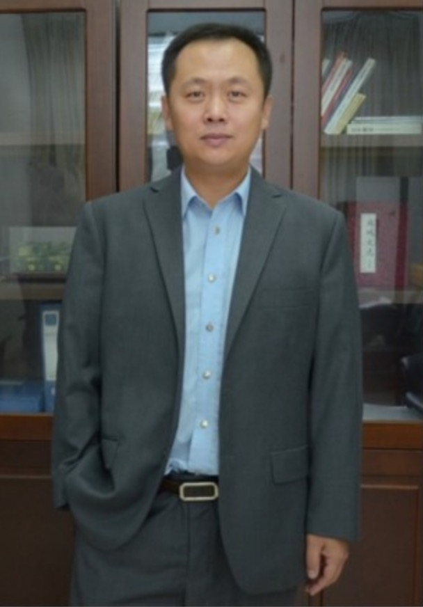

3rd Workshop on Extraction and Evaluation of Knowledge Entities from Scientific Documents (EEKE2022)
at the ACM/IEEE Joint Conference on Digital Libraries 2022 (JCDL2022), Cologne, Germany and Online
News : Since JCDL wll host EEKE, at least one author per paper must register, see instructions here <https://2022.jcdl.org/registration/>. Deadline for Registration is June, 17th 2022 (AOE).
News: Prof. Alan Porter (Georgia Institute of Technology) and Mr. Nils Newman (Search Technology Inc) have confirmed our invitation for a keynote in EEKE2022.
Keynote by Prof. Alan Porter and Mr. Nils Newman: What knowledge to extract from “Tech Mining”
News: Prof. Daqing He (University of Pittsburgh) has confirmed our invitation for a keynote in EEKE2022.
Keynote by Prof. Daqing He: Keyphrases as Knowledge Units for Text-based Applications
Accepted Papers
The following papers have been accepted and will be presented at EEKE2022.
Long Papers
- Beyond tasks, methods, and metrics: extracting metrics-driven mechanism from the abstracts of AI articles (Yongqiang Ma, Jiawei Liu, Wei Lu and Qikai Cheng)
- Detecting Technological Recombination using Semantic Analysis and Dynamic Network Analysis (Lu Huang, Xiaoli Cao, Hang Ren and Tianbin Xing)
- A Bootstrapped Chinese Biomedical Named Entity Recognition Model Incorporating Lexicons (Liangping Ding, Zhixiong Zhang and Huan Liu)
- Characterizing Knowledge Entity Extracted from Citation Sentences (Dongin Nam, Jiwon Kim, Jeeyoung Yoon, Chaemin Song, Seongdeok Kim and Min Song)
- 2SCE-4SL: A 2-Stage Causality Extraction Framework for Scientific Literature (Yujie Zhang, Rujiang Bai and Ling Kong)
- Covid-19 knowledge deconstruction and retrieval: Solutions of intelligent bibliometrics (Mengjia Wu, Yi Zhang, Mark Markley, Caitlin Cassidy, Nils Newman and Alan Porter)
Short Papers
- Automatic Construction of Technology Function Matrix (Xiang Shi, Zikun Feng, Jiawei Liu, Qikai Cheng and Wei Lu)
- Analyzing Research Diversity of Scholars Based on Multi-dimensional Calculation of Entities (Chuhan Wang, Tongyang Zhang, Yi Bu and Jian Xu)
- Medical Schema Matching using Knowledge Graph Embedding (Chaoyu Gao, Tianxing Wu, Shengqi Jing and Yuxiang Wang)
- A Semi-supervised Transfer Learning Framework for Low Resource Entity and Relation Extraction in Scientific Domain (Hao Wang, Xian-Ling Mao and Heyan Huang)
- Topic Distribution of China’s Data Governance Policies: A Full-text Highlighted Clue Word Approach (Bikun Chen, Kuan Bai and Yuxin Liu)
- Evaluation of Embedding Models for Automatic Extraction and Classification of Acknowledged Entities in Scientific Documents (Nina Smirnova and Philipp Mayr)
- A hybrid approach to identify and forecast technological opportunities based on topic modeling and sentiment analysis (Tingting Ma, Ruiping Chen, Hongshu Chen and Xiao Zhou)
Poster Papers
- Interdisciplinary topics extraction and evolution analysis (Zhongyi Wang, Jing Chen, Jiangping Chen and Haihua Chen)
- SciGraph: A Knowledge Graph Constructed by Function and Topic Annotation of Scientific Papers (Yuchen Yan and Chong Chen)
- A corpus for entity recognition in COVID-19 full-text literature (Xin An,Mengmeng Zhang and Shuo Xu)
- Named Entity Recognition for Science and Technology Policy Dynamics (Wenjiao Zheng and Bolin Hua
Call for Papers
You are invited to participate in the 3rd Workshop on Extraction and Evaluation of Knowledge Entities from Scientific Documents (EEKE2022), to be held as part of the ACM/IEEE Joint Conference on Digital Libraries 2022, Cologne, Germany and Online, June 20 – 24, 2022
https://eeke-workshop.github.io/2022
Aim of the Workshop
In the era of big data, massive amounts of information and data have dramatically changed human civilization. The broad availability of information provides more opportunities for people, but there has appeared a new challenge: how can we obtain useful knowledge from numerous information sources. A knowledge entity is a relatively independent and integral knowledge module in a special discipline or a research domain [1]. As a crucial medium for knowledge transmission, scientific documents that contain a large number of knowledge entities attract the attention of scholars [2]. In scientific documents, knowledge entities refer to the knowledge mentioned or cited by authors, such as algorithms, models, theories, datasets and software, which reflect the various resources used by the authors in solving problems. Extracting knowledge entities from scientific documents in an accurate and comprehensive way becomes a significant topic. We may recommend documents related to a given knowledge entity (e.g. LSTM model) for scholars, especially for beginners in a research field. DARPA has recently launched the ASKE (Automating Scientific Knowledge Extraction) project [3], which aims to develop next-generation applications of artificial intelligence.
Therefore, the goal of this workshop is to engage the related communities in open problems in the extraction and evaluation of knowledge entities from scientific documents. At present, scholars have used knowledge entities to construct general knowledge-graphs [4] and domain knowledge-graphs [5]. Data sources for these studies include text (news, policy files, email, etc.) and multimedia (video, image, etc.) data. Compared to existing research and workshops like Joint workshop on Bibliometric-enhanced Information Retrieval and Natural Language Processing for Digital Libraries (BIRNDL) [6] or Workshop on Mining Scientific Publications (WOSP) [7], this workshop aims to extract knowledge entities from scientific documents, and explore the feature of entities to conduct practical applications. The results of this workshop are expected to provide scholars, especially early career researchers, with knowledge recommendations and other knowledge entity-based services.
Workshop Topics
This workshop will be relevant to scholars in computer and information science, specialized in Information Extraction, Text Mining, NLP, IR and Digital Libraries. It will also be of importance for all stakeholders in the publication pipeline: implementers, publishers and policymakers. This workshop entitles this cutting-edge and cross-disciplinary direction Extraction and Evaluation of Knowledge Entity, highlighting the development of intelligent methods for identifying knowledge claims in scientific documents, and promoting the application of knowledge entities. We invite stimulating research on topics including, but not limited to, methods of knowledge entity extraction and applications of knowledge entity. Specific examples of fields of interest include:
- Extraction knowledge and entity from scientific documents
- Model and algorithmize entity extraction from scientific documents
- Dataset and metrics mention extraction from scientific documents
- Software and tool extraction from scientific documents [8]
- Construction of a knowledge entity graph and roadmap [9]
- Knowledge entity summarization
- Relation extraction of knowledge entity
- Construction of a knowledge base of knowledge entities
- Bibliometrics of knowledge entity
- Evaluation of knowledge entity in the scientific documents
- Application of knowledge entity extraction
Programme
1st Keynote: What knowledge to extract from “Tech Mining”
Abstract: We introduce “Tech Mining” -- text analyses of R&D Information to gain useful intelligence on advancing sciences and technologies. This specialty applies some of the same tools as EEKE, as we illustrate by comparing their topical emphases. We present the generation of tech emergence scores as an illustration of an advanced Tech Mining analytical capability. Some lessons learned in the development and applications of Tech Mining may suggest EEKE possibilities that we hope to discuss.
 Prof. Alan Porter is Director of R&D for Search Technology, Inc., Norcross, GA (producers of VantagePoint and Derwent Data Analyzer software). He is also Professor Emeritus of Industrial & Systems Engineering, and of Public Policy, at Georgia Tech, where he is Co-director of the Program in Science, Technology & Innovation Policy (STIP). Dr. Porter is author or co-author of some 260 articles indexed in Web of Science, and author or editor of 17 books, including Tech Mining (Wiley, 2005) and Forecasting and Management of Technology (Wiley, 2011). He co-founded the International Association for Impact Assessment and later served as president. Research interests key on developing indicators of technological emergence (with current NSF support). Publications are available at: http://www.researchgate.net/profile/Alan_Porter4. He can be reached at: aporter@searchtech.com.
Prof. Alan Porter is Director of R&D for Search Technology, Inc., Norcross, GA (producers of VantagePoint and Derwent Data Analyzer software). He is also Professor Emeritus of Industrial & Systems Engineering, and of Public Policy, at Georgia Tech, where he is Co-director of the Program in Science, Technology & Innovation Policy (STIP). Dr. Porter is author or co-author of some 260 articles indexed in Web of Science, and author or editor of 17 books, including Tech Mining (Wiley, 2005) and Forecasting and Management of Technology (Wiley, 2011). He co-founded the International Association for Impact Assessment and later served as president. Research interests key on developing indicators of technological emergence (with current NSF support). Publications are available at: http://www.researchgate.net/profile/Alan_Porter4. He can be reached at: aporter@searchtech.com.
Mr. Nils Newman is the President of Search Technology in Norcross, Georgia, USA. For over twenty years, he has worked on the development of analytical tools to assist in the management of technology. His work focuses on the use of bibliographic and patent information in research evaluation, competitive intelligence, and strategic planning. Mr. Newman has a Bachelor of Mechanical Engineering and an MS in Technology and Science Policy from the Georgia Institute of Technology. In his spare time, he is pursuing a PhD at UNU-MERIT Maastricht.
2nd Keynote: Keyphrases as Knowledge Units for Text-based Applications
Abstract: Natural language text is the main form of communication in various domains such as scholarly communication, student instructions, and healthcare. Keyphrases in the form of noun phrases are often identified and extracted as the knowledge unit for representing the content of natural language text, and they take various roles in contributing downstream tasks. However, we are still exploring important relevant issues such as the characteristics of keyphrases, their roles in knowledge exchange, and their usages in different domains. In this talk, I will present several research projects we conducted on exploring keyphrases as knowledge units, and their applications to different domains. My talk will cover keyphrase generation from academic papers using deep learning methods, keyphrase representation as the knowledge units in textbooks for supporting students’ learning, and keyphrase identification in the form of chief complaint recognition from clinical reports for representing patients’ symptoms and diseases. The goal of this talk is to highlight the importance of keyphrases in natural language text and to illustrate appropriate technologies for fulfilling keyphrase’s knowledge unit roles in various application domains.
Dr. Daqing He is a full professor at the Department of Informatics and Networked Systems, School of Computing and Information, the University of Pittsburgh. His main research interests cover information retrieval and access, natural language processing, adaptive and interactive system design, online academic communication and research data management. Dr. He has been the Principal Investigator (PI) and Co-PI for various research grants funded by the National Science Foundation (NSF), National Institute of Health, United States Defense Advanced Research Projects Agency (DARPA), Amazon, UPMC, OCLC/ALISE, University of Pittsburgh, and other agencies. He has published more than 200 articles in internationally recognized journals and conferences in these areas, which include Journal of Association for Information Science and Technology, Information Processing and Management, ACM Transaction on Information Systems, Journal of Information Science, IEEE Computers, ACM SIGIR, ACM CIKM, WWW, ACM CHIIR, ACM CSCW, ASIST, and so on. He services as the associate editor of “Aslib Journal of Information Management'', and on the editorial board of “Information Processing and Management”. He can be reached at: https://sites.pitt.edu/~dah44.
Sessions
The workshop will be held on June 23~24, 2022 (Beijing Time), and specific activities include keynotes, paper presentations and a poster session.
| June 23, 19:00~23:05 (Beijing Time) | |||
|---|---|---|---|
| 19:00-19:15 | Connection setup: we will provide details | ||
| 19:15-19:30 | Introduction | Co-Chairs of EEKE2022 (Chengzhi Zhang, Philipp Mayr, Wei Lu, Yi Zhang) | |
| 19:30-20:30 | Keynote 1: What knowledge to extract from “Tech Mining” |
Alan Porter and Nils Newman | Chair: Yi Zhang |
| 20:30-21:45 | Session 1: Extraction Method of Knowledge Entity | Chair: Yingyi Zhang | |
| 20:30-20:50 | Beyond tasks, methods, and metrics: extracting metrics-driven mechanism from the abstracts of AI articles |
Yongqiang Ma, Jiawei Liu, Wei Lu and Qikai Cheng | |
| 20:50-21:10 | A Bootstrapped Chinese Biomedical Named Entity Recognition Model Incorporating Lexicons |
Liangping Ding, Zhixiong Zhang and Huan Liu | |
| 21:10-21:30 | 2SCE-4SL: A 2-Stage Causality Extraction Framework for Scientific Literature |
Yujie Zhang, Rujiang Bai and Ling Kong | |
| 21:30-21:45 | A Semi-supervised Transfer Learning Framework for Low Resource Entity and Relation Extraction in Scientific Domain |
Hao Wang, Xian-Ling Mao and Heyan Huang | |
| 21:45-21:50 | Break | ||
| 21:50-23:05 | Session 2: Application of Knowledge Entity Extraction | Chair: Haihua Chen | |
| 21:50-22:05 | Evaluation of Embedding Models for Automatic Extraction and Classification of Acknowledged Entities in Scientific Documents |
Nina Smirnova and Philipp Mayr | |
| 22:05-22:20 | Topic Distribution of China’s Data Governance Policies: A Full-text Highlighted Clue Word Approach |
Bikun Chen, Kuan Bai and Yuxin Liu | |
| 22:20-22:35 | Medical Schema Matching using Knowledge Graph Embedding |
Chaoyu Gao, Tianxing Wu, Shengqi Jing and Yuxiang Wang | |
| 22:35-22:50 | Analyzing Research Diversity of Scholars Based on Multi-dimensional Calculation of Entities |
Chuhan Wang, Tongyang Zhang, Yi Bu and Jian Xu | |
| 22:50-23:05 | Automatic Construction of Technology Function Matrix |
Xiang Shi, Zikun Feng, Jiawei Liu, Qikai Cheng and Wei Lu | |
| June 24, 19:15~22:40 (Beijing Time) | |||
| 19:15-19:30 | Connection setup: we will provide details | ||
| 19:30-20:30 | Keynote 2: Keyphrases as Knowledge Units for Text-based Applications |
Daqing He | Chair: Chengzhi Zhang |
| 20:30-21:45 | Session 3: Knowledge Entity and Bibliometrics | Chair:Chong Chen | |
| 20:30-20:50 | Characterizing Knowledge Entity Extracted from Citation Sentences |
Dongin Nam, Jiwon Kim, Jeeyoung Yoon, Chaemin Song, Seongdeok Kim and Min Song | |
| 20:50-21:10 | Covid-19 knowledge deconstruction and retrieval: Solutions of intelligent bibliometric |
Mengjia Wu, Yi Zhang, Mark Markley, Caitlin Cassidy, Nils Newman and Alan Porter | |
| 21:10-21:30 | Detecting Technological Recombination using Semantic Analysis and Dynamic Network Analysis |
Lu Huang, Xiaoli Cao, Hang Ren and Tianbin Xing | |
| 21:30-21:45 | A hybrid approach to identify and forecast technological opportunities based on topic modeling and sentiment analysis |
Tingting Ma, Ruiping Chen, Hongshu Chen and Xiao Zhou | |
| 21:45-21:50 | Break | ||
| 21:50-22:40 | Session 4: Poster/ Greeting Notes of EEKE2022 | Chair: Mengjia Wu | |
| 21:50-22:00 | A corpus for entity recognition in COVID-19 full-text literature |
Xin An, Mengmeng Zhang and Shuo Xu | |
| 22:00-22:10 | Interdisciplinary topics extraction and evolution analysis |
Zhongyi Wang, Jing Chen, Jiangping Chen and Haihua Chen | |
| 22:10-22:20 | SciGraph: A Knowledge Graph Constructed by Function and Topic Annotation of Scientific Papers |
Yuchen Yan and Chong Chen | |
| 22:20-22:30 | Named Entity Recognition for Science and Technology Policy Dynamics |
Wenjiao Zheng and Bolin Hua | |
| 22:30-22:40 | Greeting Notes of EEKE2022 | Co-Chairs of EEKE2022 (Chengzhi Zhang, Philipp Mayr, Wei Lu, Yi Zhang) | |
| 22:40 | End of workshop | ||
Submission Information
Regular papers: All submissions must be written in English, following the ACM Proceedings template (10 pages for full papers and 4 pages for short papers exclusive of unlimited pages for references) and should be submitted as PDF files to EasyChair.
Poster & demonstration: We welcome submissions detailing original, early findings, works in progress and industrial applications of knowledge entities extraction ande evaluation for a special poster session, possibly with a 2-minute presentation in the main session. Some research track papers will also be invited to the poster track instead, although there will be no difference in the final proceedings between poster and research track submissions. These papers should follow the same format as the research track papers but can be shorter (2 pages for poster and demo papers).
Submit a paper
All submissions will be reviewed by at least two independent reviewers. Please be aware of the fact that at least one author per paper needs to register for the workshop and attend the workshop to present the work. In case of no-show the paper (even if accepted) will be deleted from the proceedings and from the program.
Workshop proceedings will be deposited online in the CEUR workshop proceedings publication service. This way the proceedings will be permanently available and citable (digital persistent identifiers and long term preservation).
Special Issue
Accepted submissions will be invited to submit to our special issue in Scientometrics.
Important Dates
All dates are Anywhere on Earth (AoE).
Deadline for submission: May, 15, 2022 May, 18, 2022
Notification of acceptance: June, 10, 2022
Camera ready: June, 20, 2022
Workshop: June, 23~24, 2022
Main Organising Committee
 Chengzhi Zhang (zhangcz@njust.edu.cn) is a professor of Department of Information Management, Nanjing University of Science and Technology, China. He received his PhD degree of Information Science from Nanjing University, China. He has published more than 100 publications, including JASIST, Aslib JIM, JOI, OIR, SCIM, ACL, NAACL, etc. His current research interests include scientific text mining, knowledge entity extraction and evaluation, social media mining. He serves as Editorial Board Member and Managing Guest Editor for 10 international journals (Patterns, IPM, OIR, Aslib JIM, TEL, JDIS, DIM, DI, etc.) and PC members of several international conferences in fields of natural language process and scientometrics. (https://chengzhizhang.github.io/)
Chengzhi Zhang (zhangcz@njust.edu.cn) is a professor of Department of Information Management, Nanjing University of Science and Technology, China. He received his PhD degree of Information Science from Nanjing University, China. He has published more than 100 publications, including JASIST, Aslib JIM, JOI, OIR, SCIM, ACL, NAACL, etc. His current research interests include scientific text mining, knowledge entity extraction and evaluation, social media mining. He serves as Editorial Board Member and Managing Guest Editor for 10 international journals (Patterns, IPM, OIR, Aslib JIM, TEL, JDIS, DIM, DI, etc.) and PC members of several international conferences in fields of natural language process and scientometrics. (https://chengzhizhang.github.io/)
 Philipp Mayr ( philipp.mayr@gesis.org) is a team leader at the GESIS - Leibniz-Institute for the Social Sciences department Knowledge Technologies for the Social Sciences (WTS). He received his PhD in applied informetrics and information retrieval from the Berlin School of Library and Information Science at Humboldt University Berlin. He has published in top conferences and prestigious journals in the areas informetrics, information retrieval and digital libraries. His research group focuses on methods and techniques for interactive information retrieval and data set search. He was the main organizer of the BIR workshops at ECIR 2014-2021 and the BIRNDL workshops at JCDL 2016 and SIGIR 2017-2019. (https://philippmayr.github.io/)
Philipp Mayr ( philipp.mayr@gesis.org) is a team leader at the GESIS - Leibniz-Institute for the Social Sciences department Knowledge Technologies for the Social Sciences (WTS). He received his PhD in applied informetrics and information retrieval from the Berlin School of Library and Information Science at Humboldt University Berlin. He has published in top conferences and prestigious journals in the areas informetrics, information retrieval and digital libraries. His research group focuses on methods and techniques for interactive information retrieval and data set search. He was the main organizer of the BIR workshops at ECIR 2014-2021 and the BIRNDL workshops at JCDL 2016 and SIGIR 2017-2019. (https://philippmayr.github.io/)
Wei Lu (weilu@whu.edu.cn) is a professor of School of Information Management and director of Information Retrieval and Knowledge Mining Center, Wuhan University. He received his PhD degree of Information Science from Wuhan University, China. His current research interests include information retrieval, text mining, QA etc. He has papers published on SIGIR, Information Sciences, JASIT, Journal of Information Science etc. He serves as diverse roles (e.g., Associate Editor, Editorial Board Member, and Managing Guest Editor) for several journals. (http://39.103.203.133/member/4)
 Yi Zhang (yi.zhang@uts.edu.au) works as a Senior Lecturer at the Australian Artificial Intelligence Institute, University of Technology Sydney. He holds dual Ph.D. degrees in Management Science & Engineering and in Software Engineering. His research interests align with intelligent bibliometrics - incorporating artificial intelligence and data science techniques with bibliometric indicators for broad science, technology & innovation studies. He is the recipient of the 2019 Discovery Early Career Researcher Award granted by the Australian Research Council. He serves as the Associate Editor for Technol. Forecast. & Soc. Change, the Editorial Board Member for the IEEE Trans. Eng. Manage., and the Advisory Board Member for the International Center for the Study of Research. (https://www.uts.edu.au/staff/yi.zhang)
Yi Zhang (yi.zhang@uts.edu.au) works as a Senior Lecturer at the Australian Artificial Intelligence Institute, University of Technology Sydney. He holds dual Ph.D. degrees in Management Science & Engineering and in Software Engineering. His research interests align with intelligent bibliometrics - incorporating artificial intelligence and data science techniques with bibliometric indicators for broad science, technology & innovation studies. He is the recipient of the 2019 Discovery Early Career Researcher Award granted by the Australian Research Council. He serves as the Associate Editor for Technol. Forecast. & Soc. Change, the Editorial Board Member for the IEEE Trans. Eng. Manage., and the Advisory Board Member for the International Center for the Study of Research. (https://www.uts.edu.au/staff/yi.zhang)
Programme Committee
- Alireza Abbasi, University of New South Wales (Canberra)
- Katarina Boland, GESIS - Leibniz Institute for the Social Sciences
- Yi Bu, Peking University
- Caitlin Cassidy, Search Technology Inc
- Chong Chen, Beijing Normal University
- Haihua Chen, University of North Texas
- Gong Cheng, Nanjing University
- Jian Du, Peking University
- Edward Fox, Virgina Tech
- Saeed-Ul Hassan, Information Technology University
- Jiangen He, The University of Tennessee
- Zhigang Hu, Dalian University of Technology
- Bolin Hua, Peking University
- Chenliang Li, Wuhan Univerisity
- Kai Li, Renmin University of China
- Shutian Ma, Tencent
- Jin Mao, Wuhan Univerisity
- Xianling Mao, Beijing Institute of Technology
- Wolfgang Otto, GESIS - Leibniz-Institute for the Social Sciences
- Xuelian Pan, Nanjing University
- Dwaipayan Roy, GESIS - Leibniz-Institute for the Social Sciences
- Mayank Singh, Indian Institute of Technology Gandhinagar
- Arho Suominen, VTT Technical Research Centre of Finland
- Suppawong Tuarob, Mahidol University
- Dongbo Wang, Nanjing Argricultural University
- Xuefeng Wang, Beijing Institute of Technology
- Yuzhuo Wang, Nanjing University of Science and Technology
- Jian Wu, Old Dominion University
- Mengjia Wu, University of Technology Sydney
- Tianxing Wu, Southeast University
- Yanghua Xiao, Fudan University
- Jian Xu, Sun Yat-sen university
- Shuo Xu, Beijing University of Technology
- Erjia Yan, Drexel University
- Heng Zhang, Nanjing University of Science and Technology
- Jinzhu Zhang, Nanjing University of Science and Technology
- Xiaojuan Zhang, Southwest University
- Yingyi Zhang, Nanjing University of Science and Technology
- Zhixiong Zhang, National Science Library, Chinese Academy of Sciences
- Yongjun Zhu, Sungkyunkwan University
References
- Chang, X., & Zheng, Q. (2007). Knowledge element extraction for knowledge-based learning resources organization. In International Conference on Web-Based Learning (pp. 102-113). Springer, Berlin, Heidelberg.
- Ying, D., Min, S., Jia, H., Qi, Y., Erjia, Y., Lili, L., Tamy, C. Entitymetrics: Measuring the Impact of Entities. Plos One, 2013, 8(8), e71416.
- https://www.darpa.mil/program/automating-scientific-knowledge-extraction
- Auer, S., Bizer, C., Kobilarov, G., Lehmann, J., Cyganiak, R., & Ives, Z. (2007). Dbpedia: A nucleus for a web of open data. In The semantic web (pp. 722-735). Springer, Berlin, Heidelberg.
- http://www.geonames.org/
- Cabanac, G., Chandrasekaran, M. K., Frommholz, I., Jaidka, K., Kan, M. Y., Mayr, P., & Wolfram, D. (2017). Report on the Joint Workshop on Bibliometric-enhanced Information Retrieval and Natural Language Processing for Digital Libraries (BIRNDL 2016). In ACM SIGIR Forum (Vol. 50, No. 2, pp. 36-43). New York, NY, USA: ACM.
- https://wosp.core.ac.uk/lrec2018/
- Boland, K., & Krüger, F. (2019). Distant supervision for silver label generation of software mentions in social scientific publications. In Proceedings of the 4th Joint Workshop on Bibliometric-enhanced Information Retrieval and Natural Language Processing for Digital Libraries(pp. 15-27).
- Zha, H., Chen, W., Li, K., & Yan, X. (2019). Mining Algorithm Roadmap in Scientific Publications. In Proceedings of the 25th ACM SIGKDD International Conference on Knowledge Discovery & Data Mining (pp. 1083-1092).
Links
Related Workshops：
Related Workshops：
BIRNDL 2019：4th Joint Workshop on Bibliometric-enhanced Information Retrieval and Natural Language Processing for Digital Libraries
Venue: SIGIR 2019 in Paris, France
Proceedings: http://ceur-ws.org/Vol-2414/
SDP 2020：1st Workshop on Scholarly Document Processing
Venue: 2020 Conference on Empirical Methods in Natural LanguageProcessing (EMNLP 2020)
Website: https://ornlcda.github.io/SDProc/
EEKE 2021：2nd Workshop on Extraction and Evaluation of Knowledge Entities from Scientific Documents
Venue: ACM/IEEE Joint Conference on Digital Libraries 2021 (JCDL2021)
Website: https://eeke-workshop.github.io/2021
AII 2021：1st Workshop on AI + Informetrics (AII2021)
Venue: iConference2021
Website: https://ai-informetrics.github.io/